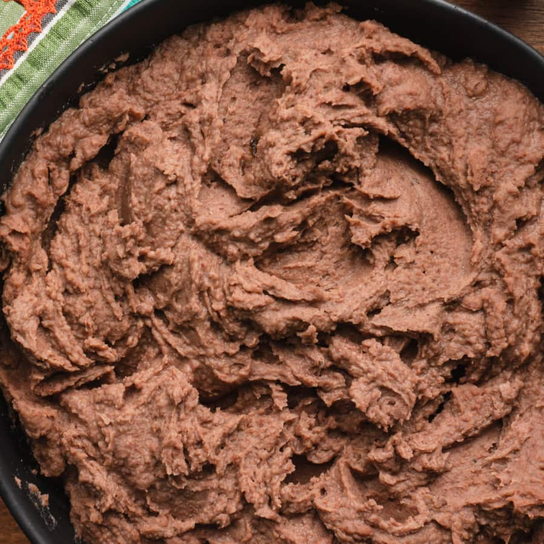

Refried Beans

Description
I use this recipe when I want to make a large batch of a palatable, healthy, and cheap side dish. Sometimes I blend the beans once they're cooked, and sometimes I leave them whole depending on what sort of texture I'm in the mood for. After cooking and storing the beans in the fridge, prepping them simply requires microwaving for a few minutes, which makes them a convenient, and time-efficient way to add fiber/carbs/and protein to meals.
Ingredients
- Half cup of oil
- 2 chopped red onions
- 5 cloves of garlic
- 3 bay leaves
- 3 Tbsp cumin
- 3 Tbsp paprika
- 2 Tbsp chilli powder
- 4 Tbsp Maggi chicken powder
- 1lb dried beans of choice (Black, Red, Pinto)
Steps
- Wash the dried beans
- Begin to saute the onions on medium heat
- After a couple minutes add the garlic, this is also a good time to start boiling a kettle-full of water to be added later
- When the onions and garlic have browned, add bay leaves, cumin, paprika, chilli powder, and Maggi. Saute 2 minutes
- Add the beans and kettle-full of now boiling water. Stir everything together
- Bring pot to boil, then reduce to simmer
- Let simmer for around 3 hours, stirring every 20 minutes, and adding more boiling water when water level drops below beans
- At this point, you can reduce the mixture to dry-ness of your liking, and optionally blend everything to a paste, or leave as whole beans